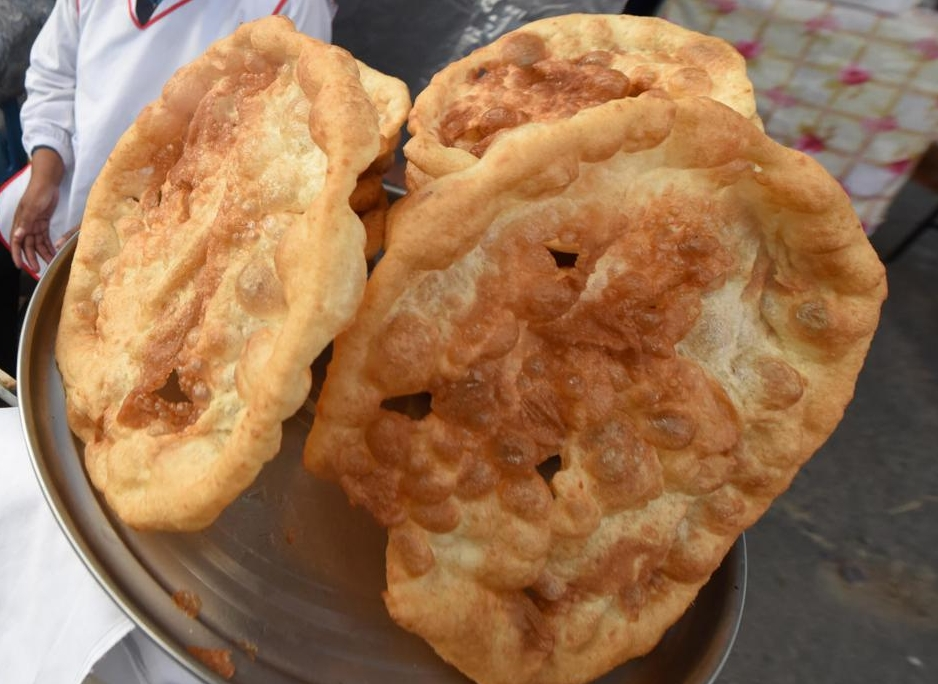

The bunuelo wasn't made in colombia or anywhere in south america, people usually say. It orginally came from spain which happened to come to bolivia and it stands for good luck or brings good luck when eating them.
| Time? | |
|---|---|
| Preperation: | 1 hour |
| Cooking: | 30 minutes |
| Eating: | less than 10 seconds |
| How to make? | |
|---|---|
| Step 1: | Put the flour, salt, and sugar in a bowl and mix it with a spoon |
| Step 2: | Make a hole in the middle and put the dry yeast and water in the middle hole |
| Step 3: | Mix it a tiny bit with a fork to activite the yeast, after mixing it put a kitchen towel over it and let it rest for 2 minutes |
| Step 4: | Next you get the sticky dough and messauge it until tthe dough isn't sticky no more |
| Step 5: | After that let it rest for 30 minutes |
| Step 6: | After 30 minutes gte the dough and rip it into pieces as a shape of a ball |
| Step 7: | Next start to warm up the oil by putting on high heat in a frypan |
| Step 8: | While the oil is warming up start to stretch to the shaped dough into flat circle | Step 9: | Fry it in a frypan and on each side it should be fried into between 8-12 seconds |
It is a dish to eat during to winter season and a food to bring together your family since you need more than 1 person to make this dish.
-Mom
Your mom makes the best flan, it reminds me when how my mom (Grandmother) used to make it.
-Dad